Global Navigation

gps_status for description of these indicators.
Global Navigation Satellite System (GNSS)
OpenCPN requires a connection to a Global Navigation Satellite System (GNSS) receiver so that you can plot your position on the chart. There are now many different satellite systems in orbit including GPS, GLONASS, Galilleo and BeiDou and most modern receivers are capable of receiving signals from multiple satellite systems simultaneously, increasing accuracy and reliability and also decreasing the amount of time to obtain a fix.
If your GNSS receiver is connected using a multiplexer or gateway, or if it is connected using NMEA 2000 refer to the respective sections in this manual. This includes GNSS receivers that include WiFi such as the Quark QK-A012 or Comar G300Ni.
For GNSS receivers connected using NMEA 0183, there are several ways in which they may be directly connected to your PC. This also includes using an AIS transceiver or a chartplotter as a position source, where the AIS transceiver or chartplotter is also directly connected to your PC.
1. RS232 Serial port
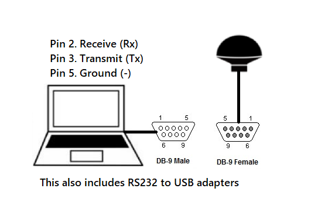
2. USB
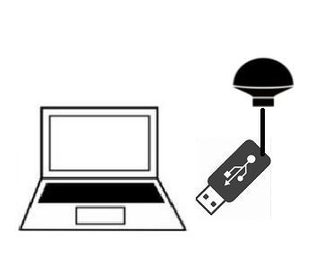
3. Bluetooth
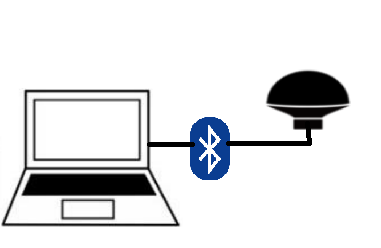
and 4. Integrated GPS (eg. Android phones and tablets)1
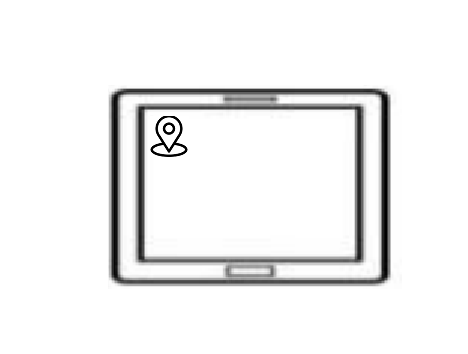
For options 1 and 2, the most important aspect is determining which serial port the GNSS receiver is connected to.
Also note that in general most NMEA 0183 devices use the following Serial Port settings:
4800 baud 8 data bits 1 stop bit No parity
If you are using an AIS transceiver be aware that they use a higher baud rate, 38400 baud. If you are using an existing commercial chartplotter as your position source, refer to the manufacturer’s documentation as the baud rates for their devices may be configurable.
Determine which serial port to use.
Using Windows
Start the Control Panel and Select Device Manager. Note the ports that are reported.
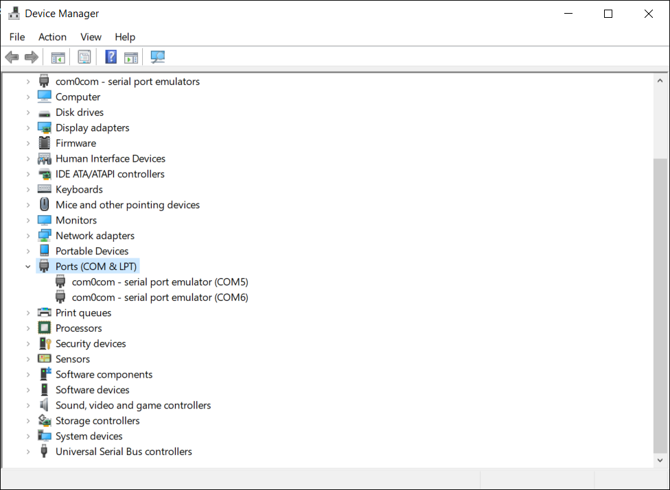
For USB devices, follow the manufacturer’s instructions and install any necessary device drivers. (For an example with more detail, see Install the GPS Device Driver below.) Then plug in the device and in Device Manager select Action → Scan for Hardware Changes and note the port name of the newly inserted device.
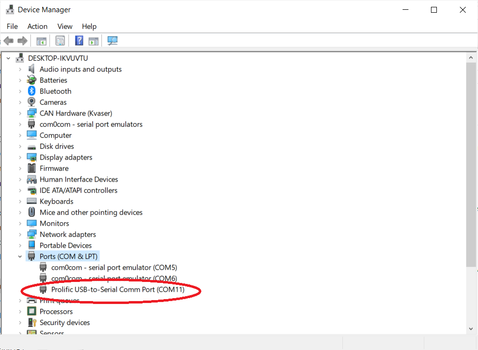
Using Debian
For Debian the actual devices connected are updated as soon as the drop-down is opened. If you first try the drop-down without anything connected, there will be a small set of devices displayed. On most laptops it will actually be empty.
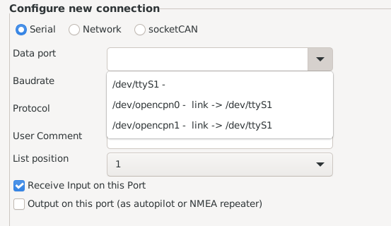
After connecting a device, it becomes visible in the drop down list. This makes it simple to detect the new device.
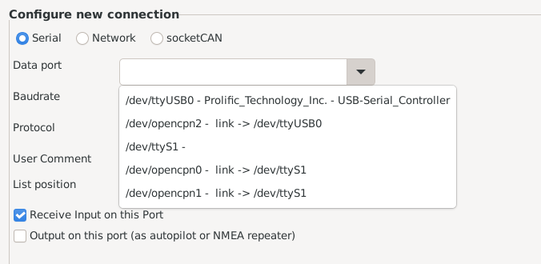
This also means there is absolutely no need to work on the command line for this. The same applies for permissions, as it’s handled by self-explanatory GUI dialogs.
The links (opencpn0, opencpn1, etc) are stable names to be used on, for example, laptops. From time to time, device names like ttyUSB0 may be replaced with ttyUSB1 after a suspend-resume cycle. To avoid these problems a link like /dev/opencpn2 can be used instead; this is guaranteed to remain stable.
Create the corresponding OpenCPN serial connection
-
Connect the USB or Serial GNSS receiver
-
Go to Toolbar → Options → Connections → Add new connection.
-
Select Serial
-
Use the drop down control and select the correct serial port
-
Select the baud rate (generally 4800 for RS232 NMEA 0183 devices, 38400 for RS232 AIS transceivers)
-
Hit OK to finish.
-
Upon reception of a valid position fix the satellite symbol will turn green.
Example
Initially, after plugging in the GPS puck, determining the Com Port and
setting up the connection in OpenCPN, there was no NMEA 0183 data stream
in the NMEA 0183 debug window and the GPS Status indicator was red.
Clearly the puck was not working right. Using the manufacturer’s
software "GPS Viewer" this was fixed by pressing "Warm Start" button and
the satellites appeared on the globe.
 gps_status
otherwise the satellite symbol will be red.
gps_status
otherwise the satellite symbol will be red.
For Mac OSX
GPS devices are connected to Mac’s via USB port (or serial-USB adapter or NMEA multiplexer with USB port) and the appropriate GPS OSX driver must be installed (probably from FTDI or Prolific), preferably using the driver provided with the device, or from the manufacturer’s website.
-
Start OpenCPN
-
Click on the Options Icon
-
Select “Connections”, and “Add Connection” and “Serial”
-
Under “Data Port” select the GPS port (In general a name starting: “/dev/cu.” or “/dev/tty.” or perhaps more obvious, like “/dev/cu.MiniPlex-99000125”, or more generic, like: “/dev/cu.usbserial”)
-
Check the baudrate is 4800
-
Choose OK
Bluetooth GPS devices use the following procedure.
-
Pair the GPS device with MacOS. Go to MacOS Open Apple > System Settings > Bluetooth, enable it, and follow the vendor’s instructions for pairing with MacOS.
-
Select OpenCPN Toolbar > Options > Connections > Add Connection.
-
Select Serial and under "Data Port", then select the name of the GPS receiver (In general a name starting with "/dev/cu." or "/dev/tty").
-
Select the Baudrate (see vendor instructions or test operation with each value in the drop-down menu). 4800, 38400, or 115200 are common.
-
Select OK. The Connections page should show the Bluetooth serial port enabled.
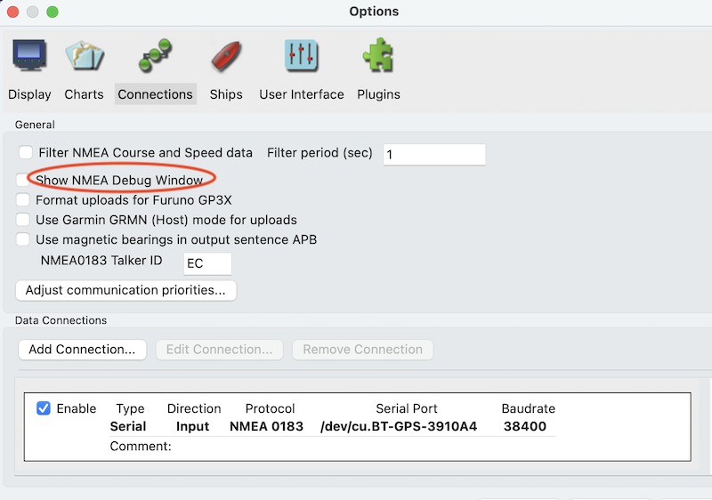
MacOS Verify Connection
Once you have successfully connected to your position source, select the "Show NMEA Debug Window". You should observe the NMEA 0183 position related sentences (GGA, GLL, GSA, GSV, RMC) in the window. If the GPS receiver has a fix, the icon in the upper right corner of OpenCPN will show green bars.
Install the GPS Device Driver
-
Install the Manufacturer’s GPS Device driver required for the Operating System.
-
Use the manufacturer’s GPS Utility Software to check that GPS device is working properly.
-
Use the GPS Utility Software to determine the Data Port parameters and record them.
-
Then "close the GPS Utility Software, such that the GPS port is no longer “captured”.
-
Reboot often solves this issue.
-
Users should complete this segment, getting support from the hardware seller or manufacturer.
Example
If they are not found automatically, the GPS Device manufacturer drivers may need to be downloaded and installed following instructions. In this example the USB Driver was automatically found via internet and installed by the Operating System.
Using Windows 11, when the GPS puck was installed, the correct COM port was found and connected but OpenCPN GPS was not working, nor receiving Nema 0183 GPS sentences in the Nmea 0183 debug window. The GPS status indicator was red. Clearly the GPS puck was not working properly.
Using manufacturer’s "GPS Viewer" software, Com Port 7 at 4800 baud was found, however there were no satellites shown on the globe, which was fixed by hitting "Warm Start" and the globe filled with satellites. (Use "Cold Start" as the next alternative, which downloads fresh GPS Ephemeris Information.) Next be sure to hit "Close GPS" so the com port is not captured by "GPS Viewer" software, before actually closing this software program.
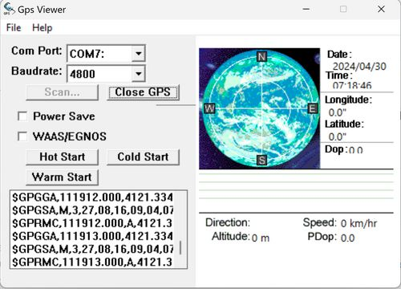
No Satellites on the Globe, so hit "Warm Start" or "Cold Start".
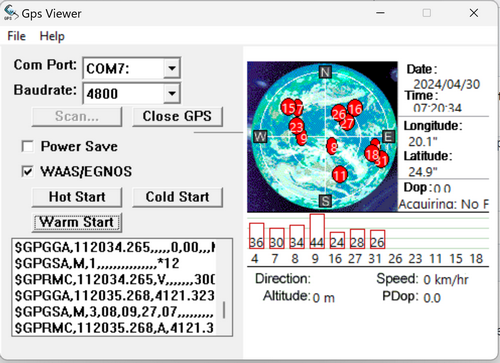
Satellites appear on the globe now.
NOTE: Before closing the program release Com Port with "Close GPS"
button.
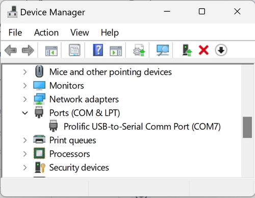
A quick check of the Device Manager (Win+X), shows Com Port 7 is still shown as the Prolific USB-Serial GPS puck. If you find no Com Ports in the Device List, pick View > "Show hidden devices". Then right click on the Prolific UAB-Aerial Comm 7 Port and pick Properties to check if the device is working. If not, try "Scan for hardware changes".
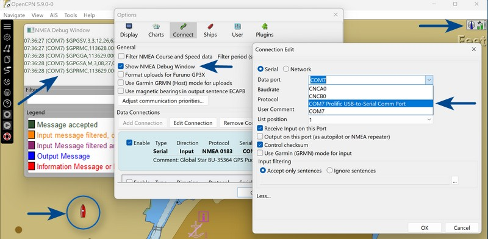
Configuration of Toolbar - Options - Connections Add a new Serial Port with the correct parameters, confirm the Nmea 0183 Debug Window streams GPS data, that the boat is Red (not grey) and that the GPS status indicator in the upper right is Green with green bars.
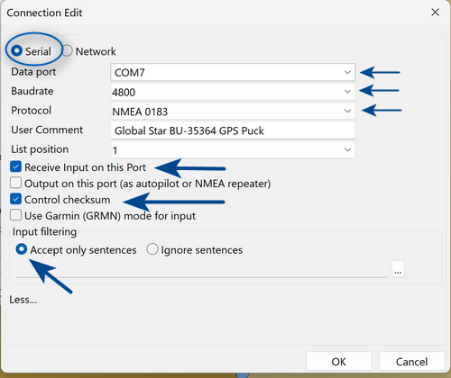
For different Operating Systems and GPS Devices the software and instructions will be different, but the process is similar. We cannot provide instructions for all of these conditions. Consult with the manufacturer or seller for GPS operation and port settings.
1. OpenCPN does not natively support Microsoft Surface computers which have an integrated GNSS receiver. These models (usually designated as "LTE") have a 3G/4G cellular modem with integrated GPS receiver however the GPS does not appear as a normal serial communications port. Instead it is accessed via the Windows Location Sensor API. Either use the Windows Sensor plugin, or use the /opencpn/supplementary_software/gps_software/win.html8_gnss_sensor